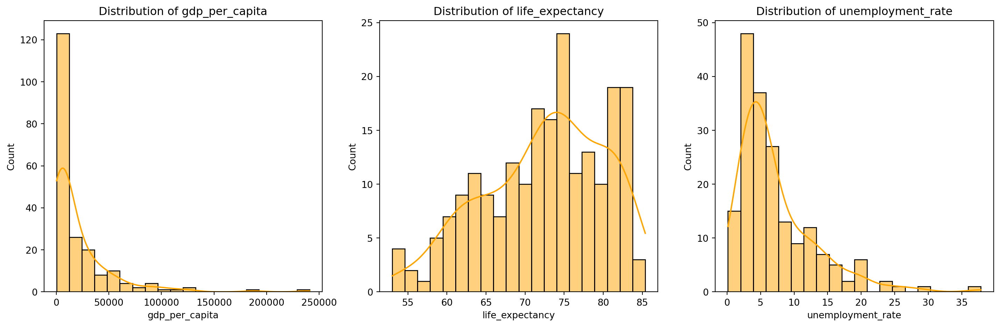
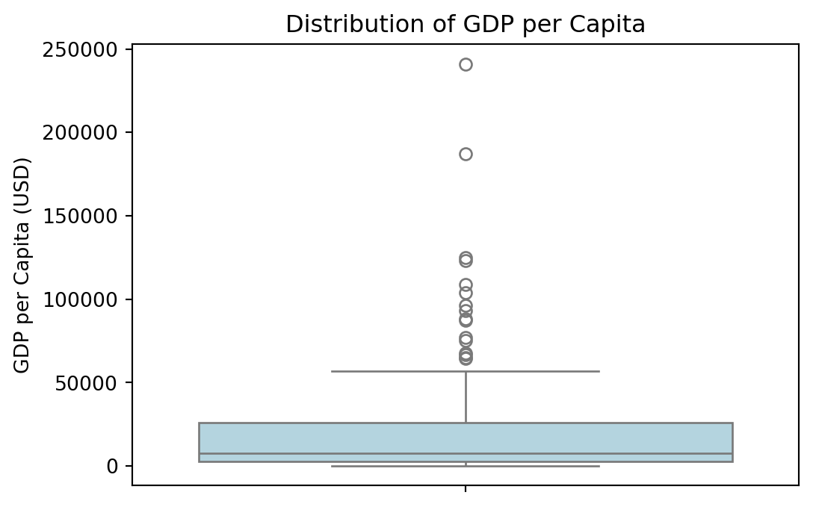
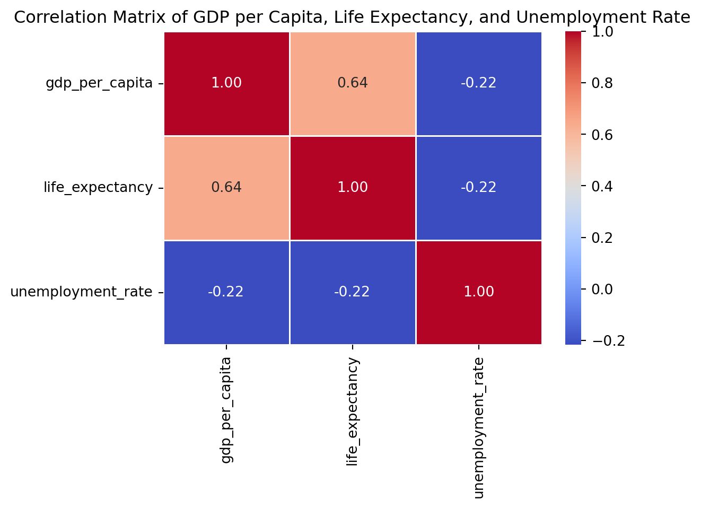
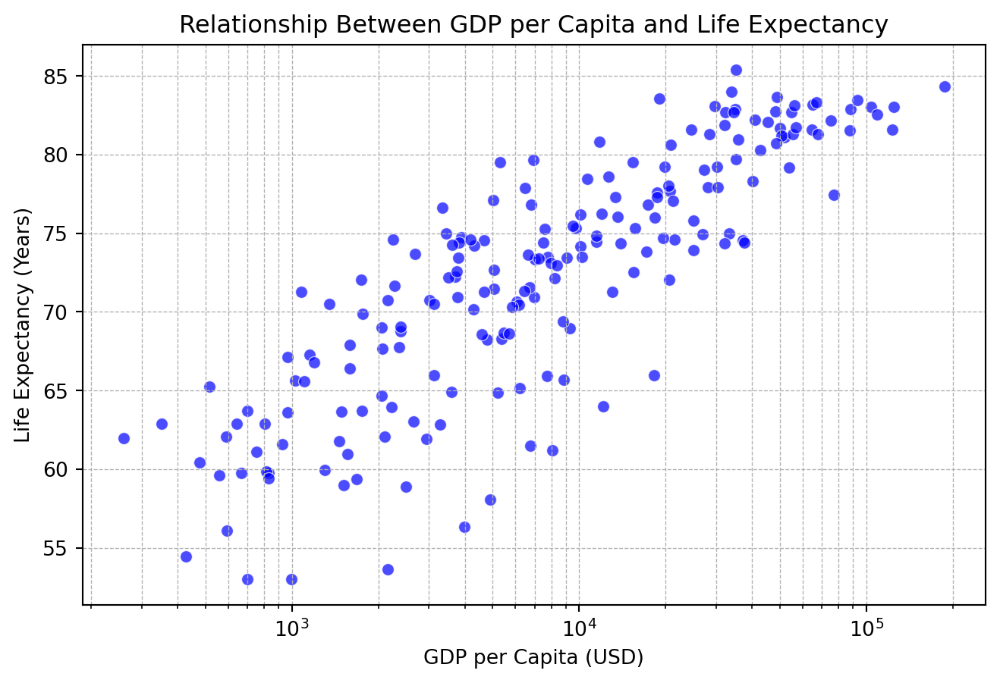
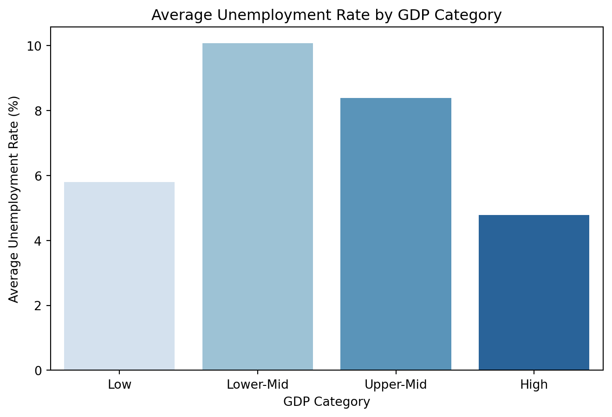

| country | inflation_rate | exports_gdp_share | gdp_growth_rate | gdp_per_capita | adult_literacy_rate | primary_school_enrolment_rate | education_expenditure_gdp_share | measles_immunisation_rate | health_expenditure_gdp_share | income_inequality | unemployment_rate | life_expectancy | total_population | |
|---|---|---|---|---|---|---|---|---|---|---|---|---|---|---|
| 0 | Afghanistan | NaN | 18.380042 | -6.240172 | 352.603733 | NaN | NaN | NaN | 68.0 | NaN | NaN | 14.100 | 62.879 | 41128771.0 |
| 1 | Albania | 6.725203 | 37.395422 | 4.856402 | 6810.114041 | 98.5 | 95.606712 | 2.74931 | 86.0 | NaN | NaN | 11.588 | 76.833 | 2777689.0 |
| 2 | Algeria | 9.265516 | 31.446856 | 3.600000 | 5023.252932 | NaN | 108.343933 | NaN | 79.0 | NaN | NaN | 12.437 | 77.129 | 44903225.0 |
| 3 | American Samoa | NaN | 46.957520 | 1.735016 | 19673.390102 | NaN | NaN | NaN | NaN | NaN | NaN | NaN | NaN | 44273.0 |
| 4 | Andorra | NaN | NaN | 9.563798 | 42350.697069 | NaN | 90.147346 | 2.66623 | 98.0 | NaN | NaN | NaN | NaN | 79824.0 |
World Development Indicators Analysis
Quarto
Quarto enables you to weave together content and executable code into a finished document. To learn more about Quarto see https://quarto.org.
<class 'pandas.core.frame.DataFrame'>
RangeIndex: 217 entries, 0 to 216
Data columns (total 14 columns):
# Column Non-Null Count Dtype
--- ------ -------------- -----
0 country 217 non-null object
1 inflation_rate 169 non-null float64
2 exports_gdp_share 169 non-null float64
3 gdp_growth_rate 202 non-null float64
4 gdp_per_capita 203 non-null float64
5 adult_literacy_rate 49 non-null float64
6 primary_school_enrolment_rate 114 non-null float64
7 education_expenditure_gdp_share 105 non-null float64
8 measles_immunisation_rate 193 non-null float64
9 health_expenditure_gdp_share 20 non-null float64
10 income_inequality 28 non-null float64
11 unemployment_rate 186 non-null float64
12 life_expectancy 209 non-null float64
13 total_population 217 non-null float64
dtypes: float64(13), object(1)
memory usage: 23.9+ KB| inflation_rate | exports_gdp_share | gdp_growth_rate | gdp_per_capita | adult_literacy_rate | primary_school_enrolment_rate | education_expenditure_gdp_share | measles_immunisation_rate | health_expenditure_gdp_share | income_inequality | unemployment_rate | life_expectancy | total_population | |
|---|---|---|---|---|---|---|---|---|---|---|---|---|---|
| count | 169.000000 | 169.000000 | 202.000000 | 203.000000 | 49.000000 | 114.000000 | 105.000000 | 193.000000 | 20.000000 | 28.000000 | 186.000000 | 209.000000 | 2.170000e+02 |
| mean | 12.493936 | 46.170395 | 4.368901 | 20345.707649 | 79.574801 | 100.874048 | 4.226215 | 83.854922 | 9.044045 | 38.328571 | 7.268661 | 72.416519 | 3.653645e+07 |
| std | 19.682433 | 34.001404 | 6.626811 | 31308.942225 | 19.375539 | 12.037532 | 2.069486 | 15.996083 | 2.703549 | 7.721488 | 5.827726 | 7.713322 | 1.410583e+08 |
| min | -6.687321 | 1.571162 | -28.758591 | 259.025031 | 27.280001 | 64.395401 | 1.027000 | 0.000000 | 5.100000 | 26.400000 | 0.130000 | 52.997000 | 1.131200e+04 |
| 25% | 5.518129 | 24.526642 | 2.438593 | 2570.563284 | 72.400002 | 94.191751 | 2.898000 | 76.000000 | 7.263266 | 32.900000 | 3.500750 | 66.782000 | 8.087260e+05 |
| 50% | 7.967574 | 40.221277 | 4.204431 | 7587.588173 | 83.779999 | 100.022247 | 3.887000 | 90.000000 | 8.925000 | 38.100000 | 5.537500 | 73.514634 | 6.465097e+06 |
| 75% | 11.665567 | 55.460067 | 6.200000 | 25982.630050 | 95.500000 | 105.035866 | 5.156000 | 96.000000 | 10.632500 | 43.125000 | 9.455250 | 78.475000 | 2.606942e+07 |
| max | 171.205491 | 211.278206 | 63.439864 | 240862.182448 | 99.999977 | 138.192001 | 16.582462 | 99.000000 | 16.571152 | 54.800000 | 37.852000 | 85.377000 | 1.417173e+09 |
| gdp_per_capita | life_expectancy | unemployment_rate | |
|---|---|---|---|
| count | 203.000000 | 209.000000 | 186.000000 |
| mean | 20345.707649 | 72.416519 | 7.268661 |
| std | 31308.942225 | 7.713322 | 5.827726 |
| min | 259.025031 | 52.997000 | 0.130000 |
| 25% | 2570.563284 | 66.782000 | 3.500750 |
| 50% | 7587.588173 | 73.514634 | 5.537500 |
| 75% | 25982.630050 | 78.475000 | 9.455250 |
| max | 240862.182448 | 85.377000 | 37.852000 |

Distribution Analysis
GDP per Capita
- The distribution is highly skewed to the right, meaning that a few countries have extremely high GDP per capita while most remain on the lower end.
- This suggests significant economic disparity among countries.
Life Expectancy
- The distribution appears normally distributed, with most countries having life expectancy between 60-80 years.
- Very few countries have life expectancy below 55 years.
Unemployment Rate
- The unemployment rate distribution is right-skewed, meaning most countries have low unemployment rates (0-10%).
- Some outliers exist where the unemployment rate is above 30%, indicating economic struggles in those regions.

Boxplot Analysis: GDP per Capita
- The boxplot shows significant outliers, meaning that some countries have extremely high GDP per capita compared to others.
- The interquartile range (IQR) is relatively small, suggesting that most countries have similar GDP levels, but a few very wealthy nations push the upper range higher.
- Countries at the lower end of GDP per capita might face economic challenges, while the extreme outliers represent highly developed economies.

Correlation Analysis
- GDP per capita and life expectancy have a strong positive correlation (0.64), meaning wealthier countries tend to have higher life expectancy.
- Unemployment rate has a weak negative correlation with GDP per capita (-0.22), suggesting that higher income levels slightly reduce unemployment, but other factors also play a role.
- Life expectancy and unemployment rate also show a weak negative correlation (-0.22), meaning that countries with higher life expectancy tend to have slightly lower unemployment rates.

Figure 1: Scatter plot showing the relationship between GDP per capita and life expectancy. Data Source: World Development Indicators.
/var/folders/79/j5l0jn69769_j4tyh9_pd8x40000gn/T/ipykernel_43451/3422065555.py:7: FutureWarning:
The default of observed=False is deprecated and will be changed to True in a future version of pandas. Pass observed=False to retain current behavior or observed=True to adopt the future default and silence this warning.
/var/folders/79/j5l0jn69769_j4tyh9_pd8x40000gn/T/ipykernel_43451/3422065555.py:11: FutureWarning:
Passing `palette` without assigning `hue` is deprecated and will be removed in v0.14.0. Assign the `x` variable to `hue` and set `legend=False` for the same effect.

Figure 2: Bar chart showing the average unemployment rate for different GDP per capita categories. Data Source: World Development Indicators.
| gdp_per_capita | life_expectancy | unemployment_rate | |
|---|---|---|---|
| Mean | 20345.707649 | 72.416519 | 7.268661 |
| Minimum | 259.025031 | 52.997000 | 0.130000 |
| Maximum | 240862.182448 | 85.377000 | 37.852000 |
| Standard Deviation | 31308.942225 | 7.713322 | 5.827726 |
Table 1: Summary statistics for GDP per capita, life expectancy, and unemployment rate.
Data Source: World Development Indicators.
As shown in Figure Figure 1, there is a strong positive correlation between GDP per capita and life expectancy. Countries with higher GDP per capita tend to have longer life expectancy.
Similarly, Table Table 1 summarizes key statistics, showing that the average life expectancy is around 72 years, with a minimum of 53 and a maximum of 85.
The data used in this analysis is sourced from the World Development Indicators database (Bank 2022).
Prior research suggests a strong correlation between economic development and life expectancy (Deaton 2015).
References
Bank, World. 2022. “World Development Indicators Database.” https://databank.worldbank.org/source/world-development-indicators.
Deaton, Angus. 2015. “The Great Escape: Health, Wealth, and the Origins of Inequality.” Princeton University Press.